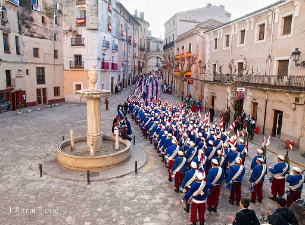
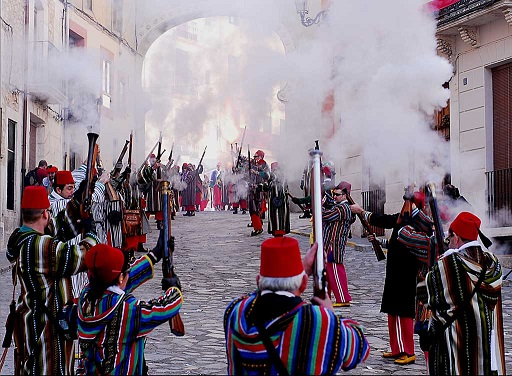

Moros y Cristianos de Bocairent
Bocairent (Valencia) · Fiesta tradicional histórica · "Historia que desfila, identidad que resiste."
- Respeta el carácter histórico y religioso de los actos.
- El uso de arcabuces y pólvora sigue normativa específica; no interfieras con los festeros.
La esencia de la fiesta
Las fiestas de Moros y Cristianos de Bocairent son una expresión viva de la memoria colectiva del pueblo. Durante varios días, la localidad revive episodios históricos a través de desfiles solemnes, música poderosa y la participación activa de sus vecinos. No es solo una representación: es un ritual compartido donde cada filà, cada traje y cada nota musical refuerzan el sentimiento de pertenencia.
¿En qué consiste?
Las fiestas de Moros y Cristianos de Bocairent son el corazón del calendario festivo del pueblo y se celebran cada año en honor a Sant Blai, patrón de la localidad, alrededor del primer fin de semana de febrero. Están consideradas una de las celebraciones festeras más antiguas y espectaculares de la Comunitat Valenciana, con un arraigo muy profundo en la identidad bocairentina y una participación masiva de vecinas, vecinos y visitantes. A lo largo de varios días se combinan devoción religiosa, pólvora, música de banda, desfiles de gran colorido y actos simbólicos que recrean la lucha histórica entre los bandos moro y cristiano por el control del castillo.
El programa festero gira en torno a seis jornadas principales. Antes de los días grandes hay una preparación con actos como la Publicació, el Acapte, los Comptes o la Novena de Sant Blai. La noche de "Les Caixes" marca un punto de inflexión: los festeros, envueltos en la tradicional manta bocairentina y acompañados de cajas y faroles, recorren el casco antiguo llenándolo de estruendo y ambiente.
Uno de los momentos más vistosos es la Entrada, el gran desfile en el que primero desfilan las filaes cristianas con sus pasodobles y trajes marciales, y al caer la tarde toman el relevo las filaes moras con sus marchas moras solemnes y coreografías más exóticas. La jornada de "Moros y Cristianos" se centra en el enfrentamiento simbólico por la posesión del castillo: batallas con arcabuces y las embajadas, parlamentos en los que los representantes de cada bando negocian y se retan antes del combate.
La dimensión religiosa atraviesa toda la fiesta. El último gran día, el de Sant Crist, los festeros suben en romería al santuario, cerrando la fiesta con un tono más recogido y emotivo. Historia, fe, espectáculo y vida comunitaria, todo en uno.
Historia y significado
Documentadas desde el siglo XVII, las fiestas de Bocairent están consideradas entre las más antiguas del calendario festero valenciano. En 1707, el rey Felipe V permite usar pólvora en las fiestas, y nace la "Fiesta de la Soldadesca": desfiles militares con milicias locales (Tomasines, Biscainos, Mosqueteros y Moros Viejos) que ganaron fuerza en 1741 con trajes vistosos y disparos que llenaban las calles de humo y emoción.
En 1859, una epidemia de difteria azota el pueblo y desaparece milagrosamente. El Ayuntamiento decide enriquecer las fiestas de febrero incorporando Moros y Cristianos, inspirados en Alcoy y en la euforia por las guerras de Marruecos. En 1860 arrancan oficialmente con siete comparsas. De aquellas salen las nueve filaes actuales: cinco cristianas (Espanyoletos, Granaders, Contrabandistes, Tercio de Suavos y Estudiants) y cuatro moras (Moros Vells, Marrocs, Moros Marins y Mosqueters). Entre los años 70 y 90 del siglo XX las filaes crecen notablemente, se incorporan las mujeres con total naturalidad, y en 2009 celebran el 150 aniversario. Hoy son Fiesta de Interés Turístico Nacional, pero siguen siendo puro sentimiento vecinal: pólvora, fe y orgullo por Sant Blai.
Fechas y calendario
Se celebran habitualmente a principios de febrero, en torno al día 3, festividad de San Blas. Las fechas exactas pueden variar ligeramente cada año según la adaptación al fin de semana; la Entrada se celebra en sábado y San Blas al día siguiente domingo. En 2026, las fiestas se celebran del 6 al 10 de febrero.
Actos destacados
- Nit de Caixes: cientos de festeros con la manta tradicional recorren el pueblo con faroles y tambores para anunciar que la fiesta ha comenzado.
- Entrada de Moros y Cristianos: desfile de colores, música y espectaculares boatos donde las 9 filaes atraviesan el pueblo ante miles de visitantes.
- Procesión de San Blas: momento de mayor fervor; la reliquia del santo recorre las calles bajo una lluvia de pétalos.
- Las Embajadas: representaciones teatrales de lucha por el castillo acompañadas de una estruendosa batalla con arcabucería por todo el casco antiguo.
- Romería a la ermita: los festeros suben hasta el santuario en lo alto del monte para celebrar la misa delante de la imagen del Santísimo Cristo.
Música y sonido
La música es uno de los pilares fundamentales de estas fiestas. Las marchas moras y cristianas marcan el paso de las filaes, definen el carácter de cada bando y transforman las calles del casco histórico en un escenario vivo donde historia y sentimiento se entrelazan. Las marchas moras, de carácter solemne y envolvente, aportan una atmósfera majestuosa. Las marchas cristianas, más marcadas y enérgicas, transmiten fuerza y determinación. Ambas, junto con los pasodobles y marchas de procesión, crean un equilibrio sonoro que es seña de identidad de la fiesta.
Más allá de los grandes desfiles, los músicos están presentes en procesiones, actos religiosos, pasacalles y momentos íntimos de convivencia festera. Su trabajo preserva un patrimonio musical propio, transmitido de generación en generación.
- No te cruces entre la banda y la filà durante el desfile.
- Durante actos solemnes o religiosos, guarda silencio y respeta el tempo musical.
- Los músicos no son animación: forman parte del acto y deben ser respetados.
Filaes participantes
Los festeros están divididos en dos bandos y en filaes, cada una con indumentaria propia que evoca la época que representa.
⚔️ Bando Cristiano
- Filà Espanyoletos
- Filà Granaderos
- Filà Contrabandistas
- Filà Tercio de Zuavos
- Filà Estudiantes
- Filà Mosqueteros
🌙 Bando Moro
- Filà Moros Vells
- Filà Marrocs
- Filà Moros Marinos
No te lo puedes perder
- La entrada de bandas del sábado a mediodía, tras la interpretación del himno de fiestas.
- El desfile de la diana del domingo a primera hora, con las filaes a ritmo de pasodoble.
- La llegada de la imagen de Sant Blai a la plaza durante la procesión y el espectacular recibimiento.
- El "Ball del moro" y el "Piquete": bailes de los Moros Vells y el Tercio de Zuavos el domingo por la tarde.
- Perderse por el casco antiguo medieval, que durante las fiestas cobra aún más encanto.
- Probar la gastronomía local y el "herbero", bebida a base de anís e hierbas de la Sierra de Mariola.
- Visitar el Museu Fester con la historia de la fiesta moro-cristiana.
Consejos prácticos
- Llega con antelación a los desfiles y la procesión: las calles del casco antiguo son estrechas y el pueblo se llena.
- Lleva protección auditiva; los momentos de pólvora y arcabucería son muy ruidosos.
- Usa calzado cómodo: el barrio medieval tiene calles empedradas.
- Abrígate bien. Las fiestas son a principios de febrero y Bocairent está a casi 700 metros de altitud.
Vocabulario festero
- Filà
- Agrupación festera perteneciente al bando moro o cristiano, con nombre propio, traje distintivo y banda de música.
- Bando
- División simbólica de la fiesta en dos grupos: bando cristiano y bando moro.
- Entrada
- Desfile principal de cada bando, uno de los actos más espectaculares de la fiesta.
- Marcha mora
- Composición musical solemne y envolvente que acompaña a las filaes del bando moro.
- Marcha cristiana
- Pieza musical de ritmo marcado y carácter épico que acompaña al bando cristiano.
- Arcabucería
- Actos de pólvora realizados con arcabuces tradicionales durante guerrillas y embajadas, regulados por normativa específica.
- Guerrilla
- Simulación de combate entre los bandos mediante disparos de arcabuz, sin proyectiles.
- Embajada
- Representación teatralizada del diálogo y enfrentamiento histórico entre ambos bandos.
- Capitán
- Cargo festero que representa y lidera simbólicamente a su bando durante un año.
Galería



Enlaces útiles
Última verificación de enlaces: 2025-02-01
Preguntas frecuentes
- ¿Cuándo se celebran?
- Habitualmente a principios de febrero, en torno al día 3, festividad de San Blas. En 2026, del 6 al 10 de febrero.
- ¿Cuál es el acto más importante?
- Las Entradas de Moros y Cristianos, por su espectacularidad, música y participación de todas las filaes.
- ¿Son aptas para ir con niños?
- Sí, aunque se recomienda precaución en los actos de pólvora y arcabucería, siguiendo las indicaciones de la organización.
- ¿Se puede asistir a los desfiles como visitante?
- Sí, los desfiles son públicos. Respeta siempre el paso de las filaes y las bandas de música.
- ¿Hay actos religiosos?
- Sí, la procesión en honor a San Blas es uno de los momentos más solemnes y significativos.
- ¿Hay medidas de accesibilidad?
- El Ayuntamiento suele habilitar zonas accesibles en los principales actos. Consulta el plan de accesibilidad anual.
- ¿Dónde informarse de cambios de última hora?
- En la web y redes sociales del Ayuntamiento de Bocairent o de la organización oficial de las fiestas.